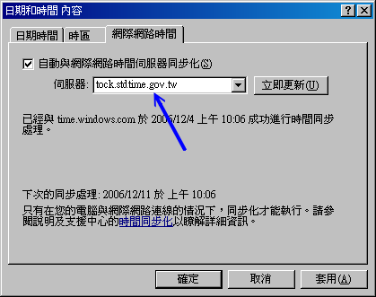

时间对于现代人来说是很重要的，因为『 Time is money ！』。既然时间如此重要，对于 Internet 来说应该也是很重要吧？
为什么呢？还记得我们在基础学习篇里面谈到的『
登录档分析』吧？
如果你架设了一个登录文件记录服务器的话，那么总得要分析每个主机所传来的信息吧？如果每一部主机的时间都不相同，
那如何判断问题发生的时间点？所以啰，『
每一部主机的时间同步化』就很重要了。
每一部主机时间的同步化重要性当然不只如此，包括之前谈到的 DHCP 客户端/服务器端所需要的租约时间限制、
网络侦测时所需要注意的时间点、刚刚谈到的登录文件分析功能、具有相关性的主机彼此之间的错误侦测等等，
都需要具有相同的时间才能够捉出问题呢。好了，底下咱们就来聊一聊，如何利用网络来进行主机的时间同步化吧！
 什么是时区？全球有多少时区？GMT
在那个时区？
什么是时区？全球有多少时区？GMT
在那个时区？
因为地球是圆的，所以同一个时刻，在地球的一边是白天，一边是黑夜。而因为人类使用一天 24
小时的制度，所以，在地球对角的两边就应该差了 12 的小时才对。由于同一个时间点上面，
整个地球的时间应该都不一样，为了解决这个问题，所以可以想见的，地球就被分成 24 个时区了！
那么这 24 个时区是依据什么来划分的呢？由于地球被人类以『经纬度』坐标来进行定位，
而经度为零的地点在英国『格林威治』这个城市所在纵剖面上，
(注：所谓的纵剖面就是由南极切到北极的直线，而横切面就是与赤道平行的切线)，如下图所示：

图一、地球的子午线、经纬度与时区的分隔概念
因为绕地球一圈是 360 度角，这 360 度角共分为 24 个时区，当然一个时区就是 15 度角啦！
又由于是以
格林威治时间为标准时间(Greenwich Mean Time, GMT
时间)，加上地球自转的关系，因此，在格林威治以东的区域时间是比较快的(+小时)，
而以西的地方当然就是较慢啰！
以台湾为例，因为台湾所在地约为东经 120 度北纬 25 度左右，又因为台湾在格林威治的东方
(废话！因为是东经嘛！ ^_^)，因此
台湾本地时间 (local time) 会比 GMT 时间快 8 小时
(GMT + 8)。当格林威治时间为零点，台湾就已经是早上八点了！
底下约略列出各个时区的名称与所在经度，以及与 GMT 时间的时差：
|
标准时区
|
经度
|
时差
|
| GMT , Greenwich Mean Time |
0 W/E |
标准时间 |
| CET , Central European |
15 E |
+1 东一区 |
| EET , Eastern European |
30 E |
+2 东二区 |
| BT , Baghdad |
45 E |
+3 东三区 |
| USSR, Zone 3 |
60 E |
+4 东四区 |
| USSR, Zone 4 |
75 E |
+5 东五区 |
| Indian, First |
82.3E |
+5.5东五半区 |
| USSR, Zone 5 |
90 E |
+6 东六区 |
| SST , South Sumatra |
105 E |
+7 东七区 |
| JT , Java |
112 E |
+7.5东七半区 |
| CCT , China Coast (台湾所在地) |
120 E |
+8 东八区 |
| JST , Japan |
135 E |
+9 东九区 |
| SAST, South Australia |
142 E |
+9.5东九半区 |
| GST , Guam |
150 E |
+10 东十区 |
| NZT , New Zealand |
180 E |
+12 东十二区 |
| Int'l Date Line |
180 E/W |
国际日期变更线 |
| BST , Bering |
165 W |
-11 西十一区 |
| SHST, Alaska/Hawaiian |
150 W |
-10 西十区 |
| YST , Yukon |
135 W |
-9 西九区 |
| PST , Pacific |
120 W |
-8 西八区 |
| MST , Mountain |
105 W |
-7 西七区 |
| CST , Central |
90 W |
-6 西六区 |
| EST , Eastern |
75 W |
-5 西五区 |
| AST , Atlantic |
60 W |
-4 西四区 |
| Brazil, Zone 2 |
45 W |
-3 西三区 |
| AT , Azores |
30 W |
-2 西二区 |
| WAT , West Africa |
15 W |
-1 西一区 |
所以啰，台湾时间是 GMT + 8 就很容易推算出来了吧！要特别留意的是，很多朋友在安装 Linux 的时候，
总是会发现目前的时间慢或者快了 8 小时，不要怀疑，绝对与时区有关！
赶紧给他查一下如何调整时区吧！ ^_^。
另外，在上表中有个比较有趣的时区，那就是在太平洋上面的国际日期变更线了！我们刚刚说，在格林威治的东边时间会较快，
而在西边时间会较慢，但是两边各走了 180 度之后就会碰头啊！那不就刚好差了 24 小时吗？没错啦！
所以才订定为『国际日期变更线』啊！国际日期变更线刚好在太平洋上面，因此，如果您有坐飞机到美国的经验应该会发现，咦！
怎么出发的时间是星期六下午，坐了 13 个小时的飞机到了美国还是星期六！因为刚好通过了国际日期变更线，
日期减少了一天喔！如果反过来，由美国到台湾，日期就会多加一天喔！ ^_^
什么是夏季节约时间
(daylight savings)？
除了时区的概念先建立起来之后，现在再来谈一谈，那么什么是『夏季节约时间』？
既然是『夏季节约时间』当然主要是与夏天有关啦！因为地球在运行的时候是呈现一个倾斜角在绕太阳运转的，
所以才有春夏秋冬(这个大家应该都知道啦！)，在夏天的时候，白天的时间会比较长，所以为了节约用电，
因此在夏天的时候某些地区会将他们的时间定早一小时，也就是说，原本时区是 8 点好了，
但是因为夏天太阳比较早出现，因此把时间向前挪，在 8 点的时候，订定为该天的 7 点～如此一来，
我们就可以利用阳光照明，省去了花费电力的时间，因此才会称之为夏季节约时间！
因为台湾实在是太小了，并没有横跨两个时区，因此，夏季节约时间对我们来说，虽然还是有帮助啦！
不过，似乎没有特别推行的样子说～
Coordinated Universal Time
(UTC)与系统时间的误差
了解了一些时区的概念之后，这里要谈的是『什么是正确的时间』。
在计算时间的时候，最准确的计算应该是使用『原子震荡周期』所计算的物理时钟了
(Atomic Clock, 也被称为原子钟)，这也被定义为标准时间 (International Atomic Time)。而我们常常看见的
UTC 也就是 Coordinated Universal Time (协和标准时间)就是利用这种
Atomic Clock 为基准所定义出来的正确时间。例如 1999 年在美国启用的原子钟 NIST F-1，
他所产生的时间误差每两千年才差一秒钟！真的是很准吶！这个 UTC 标准时间是以 GMT
这个时区为主的喔！所以本地时间与 UTC 时间的时差就是本地时间与 GMT 时间的时差就是了！
事实上，在我们的身边就有很多的原子钟，例如石英表，还有计算机主机上面的 BIOS
内部就含有一个原子钟在纪录与计算时间的进行吶！不过由于原子钟主要是利用计算芯片 (crystal)
的原子震荡周期去计时的，这是因为每种芯片都有自己的独特的震荡周期之故。
然而因为这种芯片的震荡周期在不同的芯片之间多多少少都会有点差异性，
甚至同一批芯片也可能会或多或少有些许的差异(就连温度也可能造成这样的误差呢！)，因此也就造成了 BIOS
的时间会经常的给他快了几秒或者慢了几秒。
或许您会认为，BIOS 定时器每天快个五秒也没有什么了不起的，不过如果您再仔细的算一算，会发现，一天快五秒，
那么一个月快2.5分钟，一年就快了 75 分钟了！所以说，呵呵！时间差是真的会存在的！
那么如果您的计算机真的有这样的情况，那要怎么来重新校正时间呢？那就需要『网络校时』
(Network Time Protocol, NTP) 的功能了！底下我们就谈一谈那个 NTP 的 daemon 吧！
NTP 通讯协议
如同前面说的，计算机主机主要是以 BIOS 内部的时间为主要的时间依据，而偏偏这个时间可能因为 BIOS
内部芯片本身的问题，而导致 BIOS 时间与标准时间 (UTC) 有一点点的差异存在！
所以为了避免主机时间因为长期运作下所导致的时间偏差，进行时间同步 (synchronize) 的工作就显的很重要了！
那么怎么让时间同步化呢？想一想，如果我们选择几部主要主机 (Primary server) 调校时间，让这些
Primary Servers 的时间同步之后，再开放网络服务来让 Client 端联机，并且提供 Client
端调整自己的时间，不就可以达到全部的计算机时间同步化的运作了吗！那么什么协议可以达到这样的功能呢？那就是
Network Time Protocol ，另外还有
Digital Time Synchronization Protocol (DTSS) 也可以达到相同的功能！
不过，到底 NTP 这个 daemon 是如何让 Server 与 Client 同步他们的时间呢？
- 首先，主机当然需要启动这个 daemon ，之后，
- Client 会向 NTP Server 发送出调校时间的 message ，
- 然后 NTP Server 会送出目前的标准时间给 Client ，
- Client 接收了来自 Server 的时间后，会据以调整自己的时间，就达成了网络校时咯！
不过，在上面的步骤中您有没有想到一件事啊，那就是
如果 Client 到 Server
的讯息传送时间过长怎么办？举例来说，我在台湾以 ADSL 的 PC 主机，联机到美国的 NTP Server
主机进行时间同步化要求，而美国 NTP Server 收到我的要求之后，就发送当时的正确时间给我，不过，
由美国将数据传送回我的 PC 时，时间可能已经延迟了 10 秒钟去了！这样一来，我的 PC
校正的时间是 10 秒钟前的标准时间喔！此外，如果美国那么 NTP 主机有太多的人喜欢上去进行网络校时了，所以
loading (负荷) 太重啦！导致讯息的回传又延迟的更为严重！那怎么办？
为了这些延迟的问题，有一些 program 已经开发了自动计算时间传送过程的误差，以更准确的校准自己的时间！当然啦，在
daemon 的部分，也同时以 server/client 及 master/slave 的架构来提供用户进行网络校时的动作！所谓的
master/slave 就有点类似 DNS 的系统咯！举例来说，台湾的标准时间主机去国际标准时间的主机校时，
然后各大专院校再到台湾的标准时间校时，然后我们再到各大专院校的标准时间校时！这样一来，那几部国际标准时间主机
(Time server) 的 loading 就不至于太大，而我们也可以很快速的达到正确的网络校时的目的呢！台湾常见的
Time Server 有：
- tock.stdtime.gov.tw
- time.stdtime.gov.tw
- clock.stdtime.gov.tw
- freq_f.stdtime.gov.tw
- tick.stdtime.gov.tw
至于 ntp 这个 daemon 是以 port 123 为连结的埠口 (使用 UDP 封包)，所以我们要利用 Time server
来进行时间的同步更新时，就得要使用 NTP 套件提供的 ntpdate 来进行 port 123
的联机喔！关于网络校时更多的说明，可以到 NTP 的官方网站上察看喔！
NTP 服务器也是一个很容易就可以架设成功的玩意儿，不过这个套件在不同的 distribution 上面可能有不一样的名称，
你要作的其实就是将他安装起来之后，规定一部上层 NTP 服务器来同步化你的时间即可啊！
如果你只是想要进行你自己单部主机的时间同步化，别架设 NTP ，直接使用 NTP 客户端软件即可喔！
所需套件与套件结构
在 CentOS 上头，你所需要的套件其实仅有 ntp 这个玩意儿而已，请自行使用 rpm 去找找看，
若没有安装，请拿出原版光盘来安装，或者利用 yum install ntp 即可啊！
万一找不到的话，那就用 Tarball 的方式来安装吧！请自行前往 ntp 官方网站下载原始码来安装先。
不过，我们还需要时区相关的数据文件，所以你需要的套件有：
- ntp
就是 NTP 服务器的主要套件啦，包括配置文件以及执行档等等，都是这个套件提供的；
- tzdata
套件名称为『 Time Zone data 』的缩写啰～主要提供了各个时区对应的显示格式。
至于你需要的档案方面，主要有这几个玩意儿啦：
- /etc/ntp.conf
这个是 NTP daemon 的主要配置文件，依据不同的版本放置的目录可能会不同，不过档名都是一样的！使用
locate ntp.conf 搜寻一下您的系统有没有这个档案吧！这也是 NTP 唯一的一个配置文件案！
- /usr/share/zoneinfo/
这是个目录，这个目录是 Linux 本身提供的，而不是 NTP 所提供的。
在这个目录下的档案其实是规定了各主要时区的时间配置文件案，例如台湾地区的时区配置文件案在
/usr/share/zoneinfo/Asia/Taipei 就是了！这个目录里面的档案与底下要谈的两个档案 (clock 与 localtime)
是有关系的喔！
- /etc/sysconfig/clock
这个档案其实也不包含在 NTP 的 daemon 当中，因为这个是 linux 的主要时区配置文件案啊！每次开机后
Linux 会自动的读取这个档案来设定自己系统所默认要显示的时间说！举个例子来说，
在我们台湾地区的本地时间设定中，这个档案内应该会出现一行『ZONE="Asia/Taipei"』的字样，
这表示我们的时间配置文件案『要取用 /usr/share/zoneinfo/Asia/Taipei 那个档案』的意思！
- /etc/localtime
这个档案就是『本地端的时间配置文件』啦！刚刚那个 clock 档案里面规定了使用的时间配置文件 (ZONE) 为
/usr/share/zoneinfo/Asia/Taipei ，所以说这就是本地端的时间了，此时 Linux 系统就会将 Taipei
那个档案复制一份成为 /etc/localtime ，所以未来我们的时间显示就会以 Taipei 那个时间配置文件案为准。
好了，如果现在我这部主机搬到日本东京去了，那么我应该如何调整时间呢？其实什么调整都不需要，因为我们的
localtime 主要是分析与 UTC 时间的时差来显示的格式，所以，您只要将 /etc/sysconfig/clock 里面的 ZONE
设定成为 Asia/Tokyo 并且将 /usr/share/zoneinfo/Asia/Tokyo 复制成为 /etc/localtime
，呵呵！就能显示时间为日本东京的时间了！这样是否能够了解？
- /bin/date
这个是 Linux 系统上面常见的日期与时间输出指令，用途很广喔！除了输出时间外，也可以修改时间。
- /sbin/hwclock
这是一个 root 才能执行的指令，因为 Linux 系统上面 BIOS 时间与 Linux 系统时间是分开的，所以使用 date
这个指令调整了时间之后，还需要使用 hwclock 才能将修改过后的时间写入 BIOS 当中！
- /usr/sbin/ntpd
这就是 NTP 的主要 daemon 档案啦！得要启动他才能提供 NTP 服务。注意，这个指令默认会参考 /etc/ntp.conf
里面的设定喔！
- /usr/sbin/ntpdate
这个就是 Client 端用来连接 NTP Server 的主要执行档啰！如果您没有要启用 NTP 而仅想要使用 NTP Client
功能的话，那么只会用到这个指令而已啦！
- /usr/sbin/ntptrace
这个指令可以用来追踪某部时间服务器的时间对应关系，这也是个很有用的指令喔！底下我们会介绍如何使用这支程序！
接下来，我们先来谈一谈如何设计那个 /etc/ntp.conf 吧！
主要配置文件 ntp.conf 的处理
如前所述，由于 NTP 时间服务器采用类似阶层架构 (stratum) 来处理时间的同步化，
所以他使用的是类似一般 server/client 的主从架构。网络社会上面有提供一些主要与次要的时间服务器，
这些均属于第一阶及第二阶的时间服务器 (stratum-1, stratum-2) ，如下所示：
由于这些时间服务器大多在国外，所以我们是否要使用这些服务器来同步化自己的时间呢？
其实如果台湾地区已经有标准时间服务器的话，用那部即可，不需要联机到国外啦！浪费带宽与时间啊！
而如前面提到的，台湾地区已经有第二阶的时间服务器了，所以当然我们可以直接选择台湾地区的 NTP 主机即可。
时间服务器的阶层概念
其实 NTP 的阶层概念与 DNS 很类似啦，当你架设一部 NTP 主机，这部 NTP 所向上要求同步化的那部主要主机为
stratum-1 时，那么你的 NTP 就是 stratum-2 啰！举例来说，如果我们的 NTP 是向台湾的 tock.stdtime.gov.tw
这部 stratum-2 的主机要求时间同步化，那我们的主机即为 stratum-3 ，如果还有其他的 NTP 主机向我们要求时间同步，
那么该部主机则会是 stratum-4 啦！就这样啊～
那最多可以有几个阶层？最多可达 15 个阶层喔！
如果你评估一下，确定有架设 NTP 的需求时，我们可以直接选择台湾地区的上层 NTP 来同步化时间即可。
举例来说 tock.stdtime.gov.tw 这个国家单位的第二层主机 (stratum-2) 应该是比较适合的。
一般来说，我们在进行 NTP 主机的设定时，都会先选择多部上层的 Time Server 来做为我们这一部 NTP Server
的校正之用，选择多部的原因是因为
可以避免因为某部时间服务器突然挂点时，
其他主机仍然可以提供我们的 NTP 主机来自我更新啊！然后我们的 NTP Server 才提供给自己的 Client
端更新时间。如此一来，国家单位的 tock.stdtime.gov.tw 负载才不会太大，而我们的 Client
也可以很快速的达到校时的动作！
好了，我假设俺的 NTP 服务器所需要设定的架构如下：
- 我的上层 NTP 服务器共有 tock.stdtime.gov.tw, tick.stdtime.gov.tw, time.stdtime.gov.tw
三部，其中以 tock.stdtime.gov.tw 最优先使用 (prefer)；
- 不对 Internet 提供服务，仅允许来自内部网域 192.168.1.0/24 的查询而已；
- 侦测一些 BIOS 时钟与 Linux 系统时间的差异并写入 /var/lib/ntp/drift 档案当中。
好了，先让我们谈一谈如何在 ntp.conf 里面设定权限控制吧！
利用 restrict 来管理权限控制
在 ntp.conf 档案内可以利用『 restrict 』来控管权限，这个参数的设定方式为：
restrict [你的IP] mask [netmask_IP] [parameter]
|
其中 parameter 的参数主要有底下这些：
- ignore
拒绝所有类型的 NTP 联机；
- nomodify
客户端不能更改 NTP 服务器的时间参数，这即表示客户端不能使用 ntpc 与 ntpq 这两支程序来修改服务器啰。
但客户端仍可透过这部主机来进行网络校时的；
- noquery
客户端不能够使用 ntpq, ntpc 等指令来查询时间服务器，等于不提供 NTP 的网络校时啰；
- notrap
不提供 trap 这个远程事件登录 (remote event logging) 的功能。
- notrust
拒绝没有认证的客户端。
那如果你没有在 parameter 的地方加上任何参数的话，这表示『
该 IP
或网段不受任何限制』的意思喔！一般来说，我们可以先关闭 NTP
的权限，然后在一个一个的启用允许登入的网段。
利用 server 设定上层 NTP 服务器
上层 NTP 服务器的设定方式为：
server [IP or hostname] [prefer]
|
在 server 后端可以接 IP 或主机名，鸟哥个人比较喜欢使用主机名来设定说！
至于那个 perfer 表示『优先使用』的主机啰～有够简单吧！
以 driftfile 记录时间差异
设定的方式如下：
driftfile [可以被 ntpd 写入的目录与档案]
|
因为预设的 NTP Server 本身的时间计算是依据 BIOS 的芯片震荡周期频率来计算的，但是这个数值与上层
Time Server 不见得会一致啊！所以 NTP 这个 daemon (ntpd) 会自动的去计算我们自己主机的频率与上层
Time server 的频率，并且将两个频率的误差记录下来，记录下来的档案就是在 driftfile
后面接的完整档名当中了！关于档名你必须要知道：
- driftfile 后面接的档案需要使用完整路径文件名；
- 该档案不能是连结档；
- 该档案需要设定成 ntpd 这个 daemon 可以写入的权限。
- 该档案所记录的数值单位为：百万分之一秒 (ppm)。
driftfile 后面接的档案会被 ntpd 自动更新，所以他的权限一定要能够让 ntpd 写入才行。在 CentOS 4.x
预设的 NTP 服务器中，使用的 ntpd 的 owner 是 ntp ，这部份可以查阅 /etc/sysconfig/ntpd 就可以知道啦！
keys [key_file]
除了以 restrict 来限制客户端的联机之外，我们也可以透过密钥系统来给客户端认证，
如此一来可以让主机端更放心了。不过在这个章节里面我们暂不讨论这个部分，
有兴趣的朋友可以参考 ntp-keygen 这个指令的相关说明喔！
根据上面的说明，我们最终可以取得这样的配置文件案内容喔！
[root@linux ~]# vi /etc/ntp.conf
# 在保留大部分的默认值的情况下，我们作了几个小部分的修改喔：
# 1. 先处理权限方面的问题：
restrict default nomodify notrap noquery
restrict 220.130.158.71 <==底下这三行在开放主机进入的权限
restrict 220.130.158.51
restrict 220.130.158.52
restrict 127.0.0.1 mask 255.0.0.0 <==内部与 LAN 的权限
restrict 192.168.1.0 mask 255.255.255.0 nomodify
# 2. 设定主机来源！
server 220.130.158.71 prefer <==以这部主机为最优先
server 220.130.158.51
server 220.130.158.51
# 3.原本内定的一个内部时间数据，不需要更动他
server 127.127.1.0 # local clock
fudge 127.127.1.0 stratum 10
# 4. 就是那个时间差异分析的咚咚，保留默认值即可。
driftfile /var/lib/ntp/drift
broadcastdelay 0.008
# 5.暂时不会使用的 keys 相关认证功能。
keys /etc/ntp/keys
|
然后准备一下修订一下 /etc/sysconfig/ntpd 吧！
[root@linux ~]# vi /etc/sysconfig/ntpd
OPTIONS="-u ntp:ntp -p /var/run/ntpd.pid"
SYNC_HWCLOCK=yes
# 将他改成 yes 吧！这样 BIOS 的时间也会跟着改变的！
|
这样就设定妥当了，准备来启动 NTP 服务吧！
NTP 的启动与观察
设定完 ntp.conf 之后就可以启动 ntp 服务器了。启动与观察的方式如下：
1. 启动 NTP
[root@linux ~]# /etc/init.d/ntpd start
2. 观察启动的埠口看看：
[root@linux ~]# netstat -tlunp
Proto Recv-Q Send-Q Local Address Foreign Address PID/Program name
udp 0 0 192.168.1.254:123 0.0.0.0:* 15118/ntpd
udp 0 0 127.0.0.1:123 0.0.0.0:* 15118/ntpd
udp 0 0 0.0.0.0:123 0.0.0.0:* 15118/ntpd
udp 0 0 :::123 :::* 15118/ntpd
# 主要是 UDP 封包，且在 port 123 这个埠口的啦！
|
这样就表示我们的 NTP 服务器已经启动了，不过要与上层 NTP 服务器联机则还需要一些时间，
通常启动 NTP 后约在 15 分钟内才会和上层 NTP 服务器顺利连接上。
那要如何确认我们的 NTP 服务器有顺利的更新自己的时间呢？你可以使用底下几个指令来查阅喔：
[root@linux ~]# ntpstat
synchronised to NTP server (220.130.158.71) at stratum 3
time correct to within 495 ms
polling server every 64 s
# 这个指令可以列出我们的 NTP 服务器有跟上层联机否。由上述的输出结果可以知道，
# 时间有校正约 495 * 10^(-3) 秒，且每格 64 秒会主动去更新时间喔！
|
[root@linux ~]# ntptrace -n 127.0.0.1
127.0.0.1: stratum 3, offset -0.034965, synch distance 0.109233
220.130.158.71: stratum 2, offset -0.000873, synch distance 0.031625
220.130.158.50: timed out, nothing received
***Request timed out
# 这个指令则可以列出目前我们的 NTP 服务器与上层 NTP 服务器彼此之间的关系。
# 由于我们已经和第二层连接上，但第二层与第一层就不是我们能管理的啰。
# 所以那个 timed out 可以不理他没关系的。
|
[root@linux ~]# ntpq -p
remote refid st t when poll reach delay offset jitter
==============================================================================
*220-130-158-71. 220.130.158.50 2 u 53 64 77 36.800 -10.496 1.890
220-130-158-51. .INIT. 16 u - 64 0 0.000 0.000 4000.00
+220-130-158-51. 220.130.158.50 2 u 49 64 77 33.448 -10.431 2.581
LOCAL(0) LOCAL(0) 10 l 51 64 77 0.000 0.000 0.004
|
这个 ntpq -p 可以列出目前我们的 NTP 与相关的上层 NTP 的状态，上头的几个字段的意义为：
- remote：亦即是 NTP 主机的 IP 或主机名啰～注意最左边的符号，
如果有『*』代表目前正在作用当中的上层 NTP ，如果是『+』代表也有连上线，而且可作为下一个提供时间更新的候选者。
- refid：参考的上一层 NTP 主机的地址
- st：就是 stratum 阶层啰！
- when：几秒钟前曾经做过时间同步化更新的动作；
- poll：下一次更新在几秒钟之后；
- reach：已经向上层 NTP 服务器要求更新的次数
- delay：网络传输过程当中延迟的时间，单位为 10^(-6) 秒
- offset：时间补偿的结果，单位与 10^(-3) 秒
- jitter：Linux 系统时间与 BIOS 硬件时间的差异时间，
单位为 10^(-6) 秒。
事实上这个输出的结果告诉我们，时间真的很准了啦！因为差异都在 0.0001 秒以内，
可以符合我们的一般使用了。另外，你也可以检查一下你的 BIOS 时间与 Linux 系统时间的差异，
就是 /var/lib/ntp/drift 这个档案的内容，就能了解到咱们的 Linux 系统时间与 BIOS
硬件时钟到底差多久？单位为 10^(-6) 秒啦！
安全性设定
NTP 服务器在安全的相关性方面，其实刚刚我们在 /etc/ntp.conf 里面的 restrict
参数中就已经设定了 NTP 这个 daemon 的服务限制范围了！不过，在防火墙 iptables
的部分，还是需要开启联机监听的啦！所以，在您的 iptables 规则的 scripts 当中，需要加入这一段
(我是以开放 192.168.1.0/24 这个网域作为范例的！)
iptables -A INPUT -p UDP -i $EXTIF -s 192.168.1.0/24 --dport 123 -j ACCEPT
|
若还要开放其他的网段或者主机，请自行修改您的防火墙机制咯！
上头介绍了 NTP 服务器的安装与设定，如果我们仅有十部不到的主机时，老实说，实在没有架设 NTP 服务器的需求。
只要能够在你的主机上头以 NTP 客户端软件来进行网络校时就能够同步化时间了，没必要时时刻刻进行时间的校正吧！^_^！
底下我们会介绍几个重要的概念，了解一下为何计算机关机了时间还能够继续记忆呢？
Linux 系统时间与硬件时间
在咱们的 Linux 操作系统当中其实有两个时间喔，分别是：
- 一个是 BIOS 记录的实际时间，这也是硬件所记录的；
- 一个是 Linux 自己的系统时间，由 1970/01/01 开始记录的时间参数。
当 Linux 开机后，他会主动的读出 BIOS 所记录的时间，然后开始用自己的方式来计算时间了。
当我们使用 date 之类的指令来查询或者是设定时间时，该时间指的仅是 Linux 的时间而已，
并没有更动到 BIOS 内所记录的时间吶！除非你使用 hwclock 来写入或者是读出 BIOS 的时间。
而由于 BIOS 会记录时间而且会持续计时，因此我们关机后再开机时，会发现时间其实是有顺利的累积上来的。
为了要维持 BIOS 所记录的信息，因此
主板上面的电池就很重要了，
因为他可以让 BIOS 在关机的时候还继续的记录硬件信息以及维持时间的累计。
所以如果你发现开机后整个 BIOS 时间竟然恢复成为系统出厂值，很可能就是主板上面的电池没电了。
如果你将 BIOS 断电处理时，嘿嘿！时间可能也会恢复成为系统出厂值啊。
由于每个 BIOS 内部的时间计算器可能有点误差，因此与我们的 Linux 时间多多少少就会产生差异，
这个差异在时间拉长之后，就会发现他的重要性了。所以才会需要进行网络校时嘛！您说是吧～
Linux 系统时区与手动校时工作：
date, hwclock
我们在前面说过， Linux 的时区档案就是 /etc/localtime ，这是一个时间格式的档案而不是 ASCII 类型的档案喔！
(file /etc/localtime 可以看出)，至于所有的 Time Zone 则放置在 /usr/share/zoneinfo 这个目录下。请注意：
- 当 /etc/localtime 存在时，系统的时区以该档案代表的时区来显示、
- 当 /etc/localtime 不存在时，系统的时区主要以 GMT (或 UTC) 为准；
所以，如果您想要变更您 Linux 系统的时区，那么只要在 /usr/share/zoneinfo 里面找到您需要的时区档案，
然后将他复制一份成为 /etc/localtime 就可以顺利的更新时区设定了！另外，同时建议修正一下
/etc/sysconfig/clock 这个档案里面的 ZONE 设定值！以我们台湾的 Time zone
为例，在 /etc/sysconfig/clock 这个档案当中应该是『ZONE="Asia/Taipei"』这就表示我们的时区档案为
/usr/share/zoneinfo/Asia/Taipei 这个档案啰！请对应着修改成您所想要的时区吧！
例题：
假设你的主机本来在台湾，后来被搬到美国的洛杉矶 (Los_Angeles) 去了。
请问你如何更改主机的时区参考档案？
答：
时区参考档在是 /etc/localtime ，不过这个档案在不同的 Linux distribution 的处理方式不一样。
以 Red Hat 系统为例，他是以复制的方式来处理这个档案。而 SuSE 则是以 hard link 来处理的。
所以，请记得不要随意的单纯用『复制』的方式来处理，最好先移除后复制。
所以你可以这样做：
[root@linux ~]# rm /etc/localtime
[root@linux ~]# cp -a /usr/share/zoneinfo/America/Los_Angeles \
> /etc/localtime
[root@linux ~]# vi /etc/sysconfig/clock
ZONE="America/Los_Angeles"
UTC=false
ARC=false
|
这样就 OK 的啦！ ^_^
|
好了，时区修正完毕了，那么时间呢？如前所述，目前 Linux 系统上面有两个时间喔，一个是 Linux 系统，另一个则是
BIOS 时间！我们可以使用 date 这个指令来手动修正目前主机的时间，不过， date 这个指令仅修正 Linux 时间而已，我们还需要以
hwclock 这个指令来将 BIOS 时间也更新才行！
[root@linux ~]# date MMDDhhmmYYYY
参数：
MM：月份
DD：日期
hh：小时
mm：分钟
YYYY：公元年
1. 修改时间成为 1 小时后的时间该如何是好？
[root@linux ~]# date
Thu Dec 7 15:36:45 CST 2006
[root@linux ~]# date 120716362006
Thu Dec 7 16:36:00 CST 2006
# 瞧！时间立刻就修改过来了！
|
[root@linux ~]# hwclock [-rw]
参数：
-r ：亦即 read ，读出目前 BIOS 内的时间参数；
-w ：亦即 write ，将目前的 Linux 系统时间写入 BIOS 当中啊！
2. 查阅 BIOS 时间，并且写入更改过的时间啰！
[root@linux ~]# hwclock -r
Thu Dec 7 15:37:44 2006 -0.627128 seconds
# 看一看，是否刚好差异约一个小时啊！这就是 BIOS 时间！
[root@linux ~]# hwclock -w
# 这样就写入啰～很简单吧！
|
这样可以了解了吗？当我们进行完 Linux 时间的校时后，还需要以 hwclock 来更新 BIOS
的时间，因为每次开机的时候，系统会重新由 BIOS 将时间读出来，所以， BIOS 才是重要的时间依据吶。
Linux 的网络校时
在 Linux 的环境当中可利用 NTP 的客户端程序，亦即是 ntpdate 这支程序就能够进行时间的同步化。
不过你要知道的是，
因为 NTP 服务器本来就会与上层时间服务器进行时间的同步化，
所以在预设的情况下，NTP 服务器不可以使用 ntpdate ！也就是说 ntpdate 与 ntpd 不能同时启用的。
所以你不要在 NTP server 上头执行这个指令呦！我们就来看看如何处理吧！
[root@linux ~]# ntpdate [-nv] [NTP IP/hostname]
参数：
-d ：进入除错模式 (debug) ，可以显示出更多的有效信息。
[root@linux ~]# ntpdate 192.168.1.254
7 Dec 17:21:46 ntpdate[1427]: adjust time server 192.168.1.254 offset -0.0147 sec
# 最后面会显示微调的时间有多少 (offset)
[root@linux ~]# hwclock -w
# 还得写入 BIOS 时间才行啊！
[root@linux ~]# vi /etc/crontab
# 加入这一行去！
10 5 * * * root /usr/sbin/ntpdate tock.stdtime.gov.tw && /sbin/hwclock -w
|
使用 cron 之后，每天 5:10 Linux 系统就会自动的进行网络校时啰！相当的简易吧！
Windows 的网络校时
或许你一直都没发现，其实 Windows 在预设的情况当中，已经帮我们处理了网络校时的工作喔！
不管你愿不愿意.....你可以将鼠标的指针指在任务栏右下角的时间处双击，就会出现如下的画面：

图二、Windows XP 提供的网络校时功能
如上所示，你可以自行填写台湾的时间服务器来对应时间，当然也可以填写你自己的时间服务器啊！
之后系统就会主动的上网去更新时间了。不过，这是 Windows XP 才有的功能，如果是比较早期的 Windows ，
例如 Windows 95/2000 预设是没有这个功能的。不过也没有关系，
因为国家频率与时间标准实验室 (
http://www.stdtime.gov.tw/) 也有提供一个客户端软件喔！链接资料如下：
你可以下载，直接执行他就知道如何处理了，因为是全中文接口的图形化软件嘛！
- 什么是 GMT (格林威治) 时间与 UTC 时间？
由于地球是圆的，所以同一时间点上，在地球共可分为 24 个时区，其中，我们以欧洲的格林威治时间为一个对照的依据，这个即是
GMT 时间。台湾时间比 GMT 时间快了 8 小时。至于 UTC 时间则是由原子钟所计算的时间，这个时间是相当的准确的，
主要仍以格林威治时间为时区！
- Linux 系统的所有时区档案放置哪一个目录底下？
所有的时区档案放置于：/usr/share/zoneinfo 底下！至于系统时区的配置文件则在 /etc/sysconfig/clock 与 /etc/localtime 喔！
- 我的 Linux 主机本来放置在日本东京，现在想将他拿到台湾来运作，不过因为日本与台湾有一个小时的时差，
所以我的时间应该需要经过调整才行。不过，因为我的 BIOS Time 主要是依据 UTC
时间来设定的，所以似乎只要更动时区参数即可。请问我该如何设定时区，好让我的
Linux 主机能够显示正确的时间？
先将 /etc/localtime 删除，然后将 /usr/share/zoneinfo/Asia/Taipei 这个档案复制成为 /etc/localtime 即可！
- 目前 Linux 系统上面的时间服务器主要是以 NTP 为主，请问这个 daemon 的主要配置文件放在哪里，而该配置文件中，针对上层
time server 的设定参数为何？而那个 driftfile 参数是干嘛用的？
在 /etc/ntp.conf 这个档案当中，至于上层 time server 的设定参数为 server 啊！那个 driftfile
则是用来做为『时间差额』的计算的！该参数后面接的是一个完整路径的文件名，该档案里面的数值单位为百万分之一(ppm)。
- 请问 ntptrace 的功能为何？
可以用来追踪上层 time server 的连接时间与目前时间！
- 我以 date 更新了我 Linux 上面的时间后，该如何将时间数据写入 BIOS 内？
必须利用 hwclock 这个程序来写入，利用 hwclock -w 写入 BIOS
- 在 Linux 上面如何进行网络校时？
最简单的方法即是使用『 ntpdate time.servers.ip && hwclock -w 』即可！